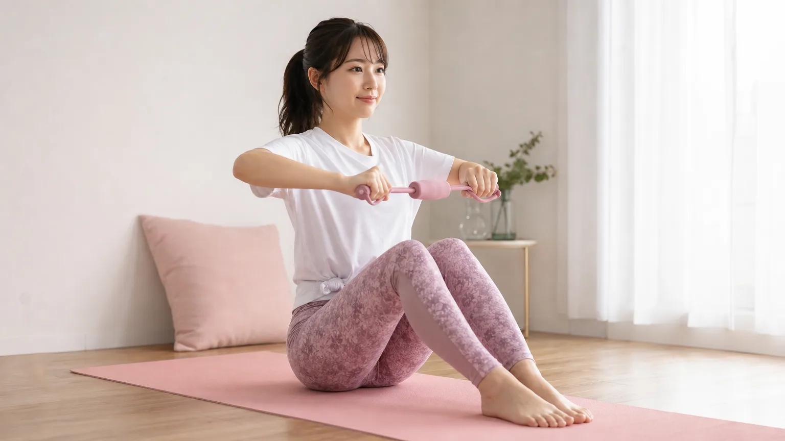

「大胸筋を鍛えると女性はどう変わるの？」に正直に答えます
バストが下がってきた、デコルテが寂しい、姿勢が悪くなった気がする——そんな悩みを感じたとき、「大胸筋を鍛えればいいと聞いたけど、本当に変わるの？」と思う方は多いはずです。
結論からお伝えすると、大胸筋を継続的に刺激することで、バストの位置感・デコルテのハリ・姿勢の改善を実感する女性は多いです。ただし「2週間で劇的に変わる」という魔法はなく、4〜8週間の積み重ねが現実的なラインです。
この記事では、ビフォーアフターの変化のリアルと、続けるための小さな習慣づくりを中心にお伝えします。
女性が大胸筋を鍛えるとどこが変わる？ビフォーアフターの実際
筋トレ前後で多くの女性が実感する変化は、大きく3つのポイントに分かれます。
① バストの位置感・丸みが変わる
大胸筋はバストを下から支える「土台」の役割を担っています。筋肉が弱まると重力に負けてバストが下がりやすくなります。鍛えることでバストを持ち上げる力が戻り、位置感や丸みが改善されたと感じる方が多いです。
② デコルテのラインが整う
鎖骨まわりや胸の上部に薄く筋肉がつくことで、デコルテのくぼみが目立ちにくくなり、首元がすっきり見える効果が期待できます。洋服の着こなしが変わったと感じる方も少なくありません。
③ 姿勢・猫背が改善される
大胸筋と背中の筋肉はバランスを取り合っています。大胸筋を適切に鍛えながら肩甲骨まわりもほぐすことで、巻き肩・猫背が改善され、全体的なシルエットが整うことがあります。
📅 大胸筋トレーニング 4週間タイムライン｜女性のビフォーアフター変化の目安
※個人差があります。あくまで目安としてご参考ください。
🎯 目標：週3回・1回5〜10分だけ続ける
🎯 目標：フォームを丁寧に確認しながら継続
🎯 目標：回数より「質」を意識して継続
🎯 目標：8週間継続を次の目標に設定
「続けられない」を防ぐ！習慣化のための3つの環境づくり
筋トレが続かない最大の理由は「意志が弱いから」ではありません。環境が整っていないからです。小さな工夫で、やる気に頼らない仕組みをつくりましょう。
① 道具を「見える場所」に置く
ヨガマットやダンベルをクローゼットにしまうと、出すのが面倒でやらなくなります。リビングや寝室の目につく場所に広げたまま置くだけで、「ついでにやろう」が生まれます。
② 「〇〇のあと」にセットする
「歯磨きのあと」「朝のコーヒーを飲んだあと」など、すでにある習慣にくっつけると定着しやすくなります。これを習慣スタッキングと呼びます。最初は1日1種目・1分でもOKです。
③ 「完璧にやらなくていい日」を決める
週7日すべてやろうとすると、1日休んだだけで「もうダメだ」と感じてしまいます。最初から週3日だけやる日を決め、残り4日は休息日と設定しておくと、罪悪感なく続けられます。
習慣化のメンタルについてもっと詳しく知りたい方は、ダイエットが続かない女性向けの心理的習慣術もあわせてご覧ください。
自宅でできる大胸筋トレーニング3選｜初心者向けステップ
道具なし・自宅でできる種目から始めましょう。最初は週3回・各種目10回×2セットを目標にしてください。
ステップ1：ひざつきプッシュアップ（Week 1〜2）
ひざをついた状態で行う腕立て伏せです。胸が床に近づくまでゆっくり下げ、2秒かけて戻すのがポイント。速くやるより、大胸筋に効いている感覚を大切に。
ステップ2：ワイドプッシュアップ（Week 2〜3）
手の幅を肩幅より広くとったプッシュアップ。大胸筋の外側と内側を広くカバーできます。肘を外に開くように意識すると効果が高まります。
ステップ3：ダンベルフライ（Week 3〜4）
500mlペットボトルに水を入れたものでも代用できます。仰向けに寝て両手を広げ、胸の上で弧を描くように閉じる動作を繰り返します。バストを包み込むように動かすイメージで。
全身の体型変化を同時に目指したい方には、女性のダイエットビフォーアフターと続けるコツの記事も参考になります。
やる気が出ない日の「1分だけルール」
「今日はしんどい」「気分が乗らない」という日は必ずあります。そんなときは「1分だけやる」と決めてマットに立つだけでOKです。
1分やってみて本当に嫌なら止めていい。でも多くの場合、体が動き出すと「もう少しだけ」と続けられます。これは行動が先、やる気はあとという心理学の原則です。完璧にやろうとしないことが、長続きの秘訣です。
大胸筋トレーニングと合わせたい生活習慣
筋トレの効果を引き出すために、食事や睡眠も少し意識してみましょう。ただし、厳しい制限は必要ありません。
- 🥚 たんぱく質を1食に1品意識して取り入れる（卵・豆腐・鶏肉など）
- 💤 睡眠7時間を目安に。筋肉の修復は寝ている間に行われます
- 🚶 トレーニング後に軽く歩くと血流が促進され、回復が早まります
- 🧘 胸を開くストレッチを毎朝30秒行うと、姿勢改善効果が高まります
よくある質問（FAQ）
Q. 大胸筋を鍛えるとバストが大きくなりますか？
大胸筋はバストの脂肪組織の下にある筋肉です。鍛えることでバストを支える土台が強化され、位置感・ハリ・形の改善を感じる方が多いです。脂肪そのものが増えるわけではありませんが、バストアップして見える効果は期待できます。個人差があるため、「必ず大きくなる」とは言えませんが、デコルテや姿勢の変化を実感する方は多いです。
Q. 週に何回やれば変化を感じられますか？
週3回・1回10〜15分を4週間続けることが、変化を感じるための現実的な目安です。毎日やると筋肉の回復が追いつかず逆効果になることもあります。「やらない日＝サボり」ではなく、「休息日＝筋肉が育つ日」と捉えて、無理のないペースで続けることが大切です。
Q. 筋トレを始めたばかりで筋肉痛がひどいです。休んでいいですか？
もちろん休んで大丈夫です。筋肉痛がある日はその部位を休ませることが正解です。痛みが引いてから再開しましょう。「休んだら習慣が途切れる」と心配な方は、軽いストレッチや散歩など体を動かす別の行動に切り替えるのがおすすめです。